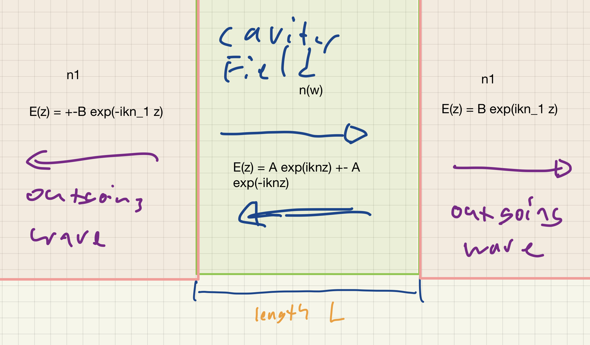

QNMs of 1D Fabry-Perot Resonators¶
We will try to gain insight into the properties of QNMs by investigating the case of a 1D Fabry-Perot resonator. As we go through the example, keep in mind that will expect the field in the resonator can be written as a sum over its different resonant modes.
Problem Setup¶
We are given a slab that:
is of length \(L\)
has a refractive index \(n(\omega)\) 1
is embedded in a hoogeneous medium of refractive index \(n_1\)
Given this setup, we wish to find a general solution to the field.
Eigenmodes are just plane waves bouncing back and forth¶
In the absence of an incident wave, the field at frequency \(\omega = ck\) can be written as the superposition of two counter-propagating plane waves inside the cavity and two outgoing plane waves outside.

Formally speaking:
reflectance \(r\)
transmission \(t\)
\(E(z)= \begin{cases} A \exp (iknz)\pm A \exp(-iknz), & \text{for \)|z| < \frac{L}{2}\( }\\ B\exp(ikn_1 z), & \text{ for \)z\geq \frac{L}{2}\( }\\ \pm B \exp(-ikn_1z) , & \text{for \)z \leq -\frac{L}{2}\( \end{cases}\)
\(B\exp(ik n_1 L/2) = t A \exp(iknL/2)\)
Resonance Condition and leakage imply complex frequency¶
The resonance condition The resonance condition says that the field amplitude \(A\) should be recovered after one round trip in the resonator. This implies that $\(A = r^2 A \exp(2iknL).\)$
Since the cavity loses energy via leakage, we know \(|r^2| < 1\)
SInce the cavity loses energy via absorption, we know \(\text{Im} (n)> 0\)
Thus, the solutions for mode frequency must be complex numbers: $\( \tilde{\omega}_m = c\tilde{k}_m = \Omega_m - i \Gamma_m /2.\)$
Which verify:
Our takeaway from this is that:
The imaginary part of the complex frequency restores the stationary state in the leaky cavity by amplifying waves.
- 1
`For now we neglect the slab dispersion.